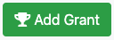
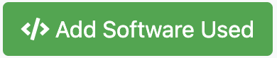

Add Metadata#
Video Walkthrough
Providing any of the following data is optional has no bearing on your ability to request allocations or make projects. This is simply to help us collect better data on HPC usage and to provide you with better metrics. We greatly appreciate efforts to fill this out, as it aids our ability to provide the best HPC services for your research and classes.
Add Grants#
To add grant information that is attached to a project:
Go to your project page and click on .
If you have any grants with an SMU G-Number, select the check boxes next to every grant associated with that project and click on .
If your grant does not appear (as is the case with internal SMU grants), then click on .
Provide any information that you can for the grant. Title, Role, Funding agency, Grant Start Date, Grant End Date are required fields. Verification source is not a required field, but could be helpful information if you are requesting larger than usual allocations.
On the project page, you can verify that your grant has been added to the project under .
{kind=link}
{kind=link}
{kind=link}
{kind=link}
Add Publications#
To add publication information that is attached to a project:
If your publication has a DOI or Bibliographic Code, try searching based on those, select the checkbox next to the correct publication(s) from your search results, and click on .
If your publication does not have a DOI or Bibliographic Code, you can add it manually by clicking on .
Provide a Title, Author(s), Year, and Journal for your publication and click on .
On the project page, you can verify that your publication has been added to the project under .
{kind=link}
{kind=link}
{kind=link}
{kind=link}
{kind=link}
Add Research Outputs#
If there are any research outputs that do not fall under the category of a publication (such as conference presentations or posters), you can add them by follow the instructions below.
{kind=link}
{kind=link}
Add Software Used#
To add information about software used on the project:
Important
Like the rest of the metadata, any software used that is added here is just for data collection purposes. You will still need to load software using module load [software_name] or another method on the HPC systems.
Go to your project page and click on .
For any software currently available on HPC systems: search the software name, select the checkbox next to the software version(s) you used, and click on . This list is updated infrequently, so newer software may need to be added manually.
If you are using any other software or cannot find your software using the search feature, click on
Provide the Software Name, Version, and Software Homepage, then click on .
On the project page, you can verify that your software has been added to the project under .
{kind=link}
{kind=link}
{kind=link}
{kind=link}
{kind=link}